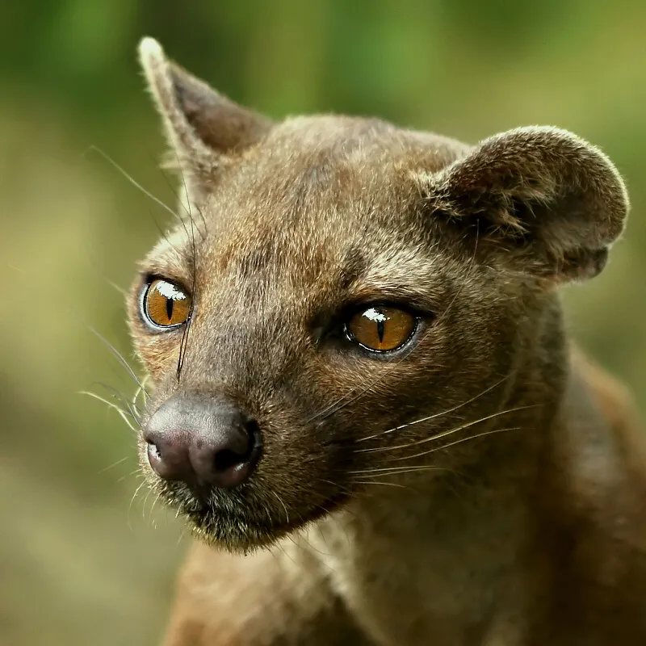

Fossa
Fossas (genus Cryptoprocta) are animals related to the mongoose civet. They contain physical traits similar to the cat, dog, monkey, and the weasel. They are very intelligent and agile animals who make the forest their homes. They are very excellent hunters use ambush tactics to capture prey. Fossas are very rare and aren't domesticated.
